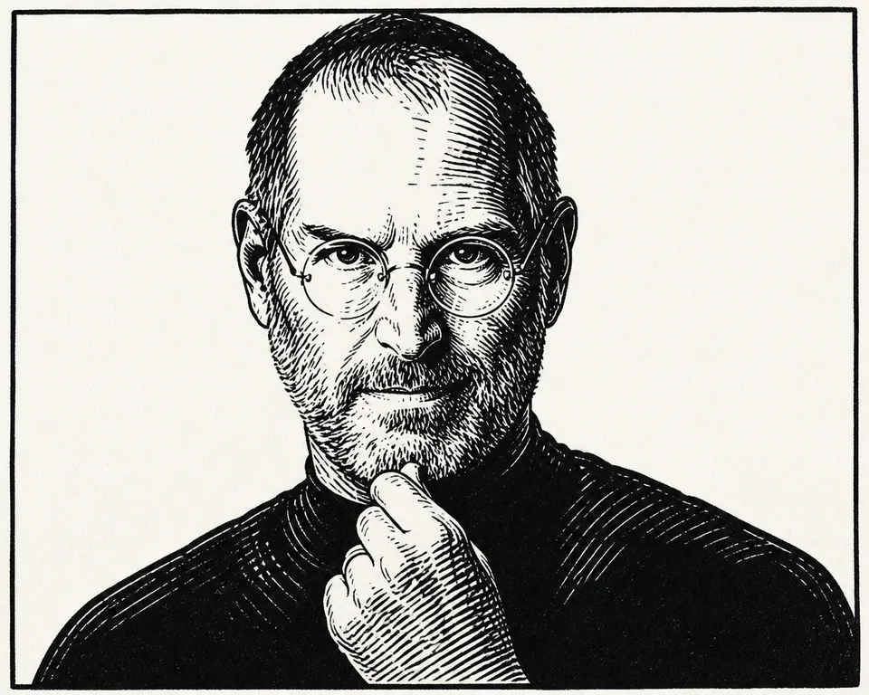

визуальных заданий в сравнении трёх режимов моделью-судьёй
исследование · 2026 · мультимодальные агенты
УЧЕБНИК КАК ИНСТРУМЕНТ
Qwen 3.5 9B
изображение задания
поиск по учебникам
единая оценка
модель решает задачу только по исходному изображению
открытый веб помогает на общем валидационном срезе
поиск по учебникам требует более точной маршрутизации и фильтрации
01 · ПОСТАНОВКА
НЕ ПРОСТО ПОИСК.
РЕШЕНИЕ, КОГДА ИСКАТЬ.
Визуальное условие уже может содержать всё необходимое. Агент должен отличить недостаток знаний от задачи, где требуется только аккуратное рассуждение по изображению.
Улучшает ли поиск по учебным материалам качество ответов VLM-агента по сравнению с той же моделью без retrieval или с веб-поиском?
Веб для широких фактов
Общие и редкие сведения, которых модель могла не видеть во время обучения.
Учебник для программы
Точные определения, формулировки и примеры из конкретного курса.
Поиск может мешать
В самодостаточных задачах лишний контекст отвлекает от исходного условия.
Нужна маршрутизация
Тип задания должен определять: решать самому, искать в вебе или в учебниках.
02 · ПОДХОДЫ
ОДНА МОДЕЛЬ.
РАЗНЫЕ ИСТОЧНИКИ.
Меняем только доступные инструменты и стратегию их применения. Формат задачи, ответа и оценки остаётся единым.
B0
Модель видит только задание
Это честная точка отсчёта: текст, изображение и метаданные без внешних источников.
- Источник: исходное изображение
- Сильная сторона: нет шума retrieval
- Риск: не хватает специфичных знаний
WEB
Широкий внешний контекст
Агент может искать сведения в интернете, если считает собственных знаний недостаточно.
- Источник: открытый веб
- Сильная сторона: широкий охват
- Риск: нерелевантные и неучебные источники
RAG
Проверяемый поиск по учебникам
Гибридный поиск и повторное ранжирование возвращают до пяти сильных фрагментов из корпуса.
- Источник: турецкие учебники
- Сильная сторона: знания учебной программы
- Риск: слабый чанк может увести решение
ROUTE
Источник выбирается по задаче
Точное официальное совпадение используется напрямую; иначе image-first агент решает сам или вызывает поиск.
- Источник: ключ, изображение или учебник
- Сильная сторона: меньше лишних вызовов
- Риск: ошибка маршрутизации
03 · ДАННЫЕ
8 300 ЗАДАЧ.
ОДИН ЧЕСТНЫЙ СРЕЗ.
Объединяем три многоязычных бенчмарка и фиксируем сопоставимые срезы для разных режимов — от текста до экзаменационных скриншотов.
в итоговой сводке
языковых среза
школьных направлений
текст и скриншот
01 · TUMLUтекст · выбор ответа
2 583
Многоязычные школьные вопросы
Закрытые задания по школьным предметам с вариантами ответа.
02 · EXAMS-Vскриншот · выбор ответа
2 977
Визуальные экзаменационные задания
Закрытые вопросы, где модель получает исходный скриншот задания.
03 · MGSMтекст · открытый ответ
2 740
Многошаговые задачи по математике
Открытые задания с числовым ответом, который нужно получить рассуждением.
как собран срез
Каноническая выборка зафиксирована с сидом 47 и стратифицирована по предмету. В итог вошли только задания, которые оба сравниваемых режима завершили без ошибки.
- 5 560закрытых вопросов
- 2 740открытых вопросов
- 5 323текстовых заданий
- 2 977скриншотов
04 · РЕЗУЛЬТАТЫ
ПОИСК — НЕ
АВТОМАТИЧЕСКИЙ РОСТ.
На одном валидационном срезе напрямую сравниваются самостоятельное решение, открытый веб и поиск по учебникам.
LLM-as-a-judge · N = 198
один валидационный срез
Δ
−2,6 п.п.
Textbook RAG относительно режима без инструментов
Без инструментов / веб-поиск. На открытых заданиях разница достигла −6,0 п.п.
Пользу даёт не сам доступ к поиску, а правильное решение — когда, где и что искать.
валидационный срез · N = 198 · модель-судья
Где помогает каждый источник
Предмет
198 заданий
На полном срезе веб-поиск лидирует, а RAG уступает модели без инструментов на 2,6 п.п.
основной вывод
Веб — для внешних фактов, RAG — для знаний из учебников, сама модель — для рассуждения по условию. Главный фактор качества — не наличие поиска, а правильный выбор источника и момента его вызова.
05 · СИСТЕМА
ИЗОБРАЖЕНИЕ
ОСТАЁТСЯ ГЛАВНЫМ.
Найденный фрагмент поддерживает решение, но не заменяет условие задачи.
- 01
Прочитать задание
Извлечь текст, числа, формулы и вопрос из исходного изображения.
- 02
Выбрать источник
Решать самостоятельно либо обратиться к официальному ключу или учебникам.
- 03
Проверить контекст
Отбросить слабые и конфликтующие чанки, разрешить одну переформулировку.
- 04
Сверить ответ
Повторно проверить числа и вопрос по изображению, затем вернуть единый результат.
действующая схема
ОДИН ВХОД · ДВА МАРШРУТА · ЕДИНЫЙ РЕЗУЛЬТАТ
Заданиетекст · изображение · предмет
Проверка источникапоиск точного официального ответа
✓
Ответ из ключамодель и поиск не вызываются
3
Агентчитает изображение, решает и проверяет
⌕
Поиск по учебникамдо двух запросов · пять фрагментов
Слабые и противоречивые фрагменты не участвуют в ответе.
Единый результатответ · решение · история работы
06 · ХОД РАБОТЫ
ОТ КОНТРАКТА
К ПРОВЕРЯЕМОМУ ВЫВОДУ.
Каждый следующий этап добавлялся только после воспроизводимой проверки предыдущего.
Форматы данных
Единые схемы задания, изображения, чанка и результата агента.
Базовая линия
Запуск одной модели без инструментов и сохранение полного trace.
Корпус и индексы
Разбор учебников, гибридный retrieval и повторное ранжирование.
Агентный инструмент
Прямой вызов поиска, ограничение запросов и проверка релевантности.
Единая оценка
Точные метрики, мультимодальный судья и предметные срезы.
Маршрутизация
Выбор между самостоятельным решением, вебом и учебником.
07 · ТЕХНОЛОГИИ
Модель и агент
- Python
- Qwen 3.5 9B
- PyTorch
- Pydantic
Поиск
- FAISS
- BM25
- Многоязычный E5
- BGE · повторное ранжирование
Оценка и анализ
- Модель-судья
- SQLite
- VLM Analytics
08 · КОМАНДА
ЛЮДИ, КОТОРЫЕ
СОБИРАЮТ СИСТЕМУ.
Пять направлений разработки и единая исследовательская методология.

Дмитрий Быков
Парсинг учебников, разбиение материала на чанки.
ДТфото
Поиск
Даниил Теслов
Эмбеддер, поиск и поисковый индекс.
МКфото
Оценка
Максим Кулямин
Модель-судья и аналитика качества.
ДШфото
Агент
Денис Шабров
Базовый агент и экспериментальные прогоны.
АЗфото
Агент
Артур Заплатин
Инструмент поиска, агентная стратегия и интеграция.
ИКфото
Ментор проекта
Илья Коротков
Методология, постановка экспериментов и ревью.
исследование продолжается
СМОТРЕТЬ КОД